Welcome to my image gallery!
This gallery contains images that I took on my own, as well as works of art by users on the popular art-sharing website, DeviantArt. Feel free to look around!
This gallery contains images that I took on my own, as well as works of art by users on the popular art-sharing website, DeviantArt. Feel free to look around!


") 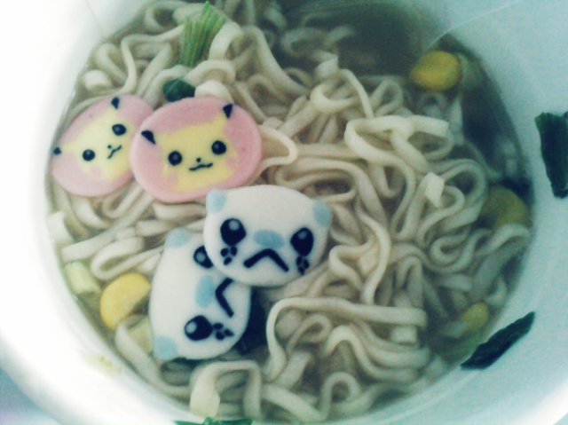
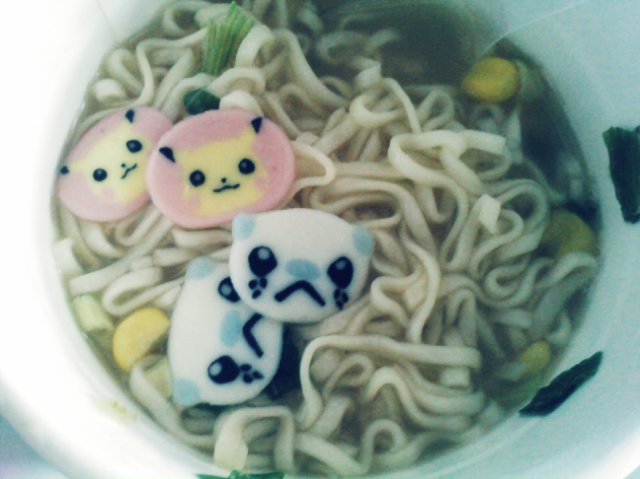
") 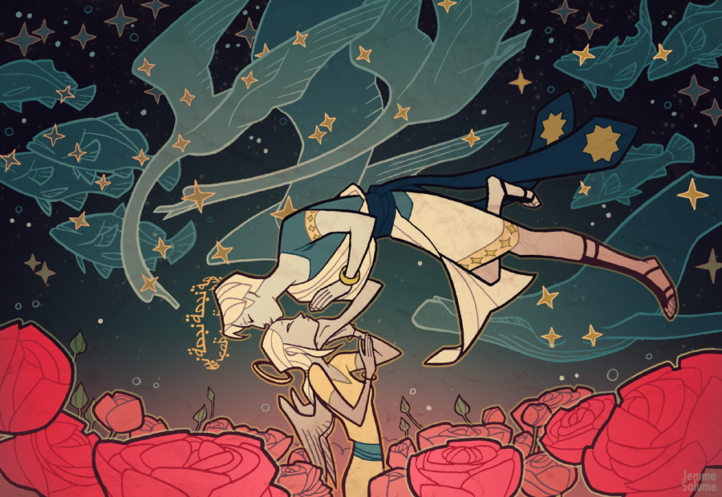
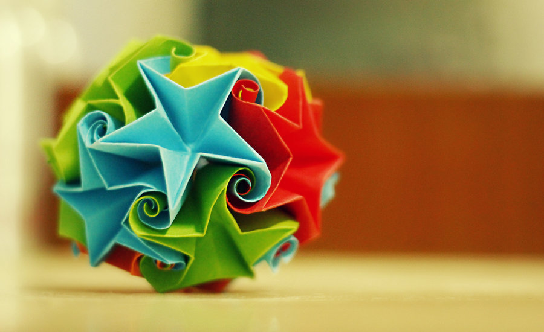
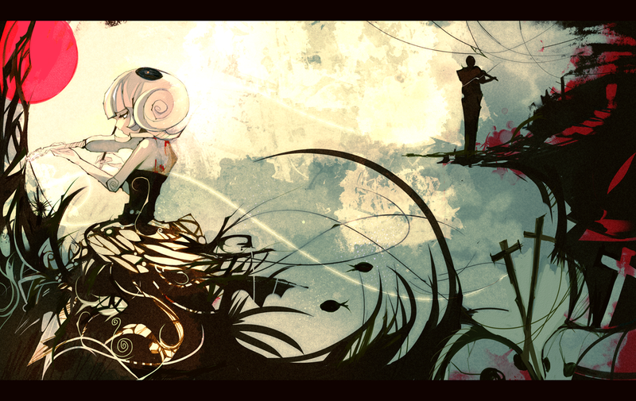
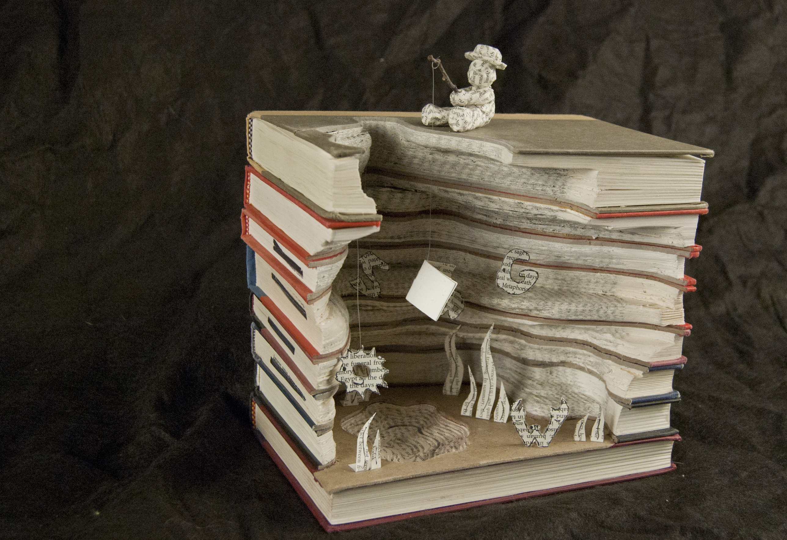
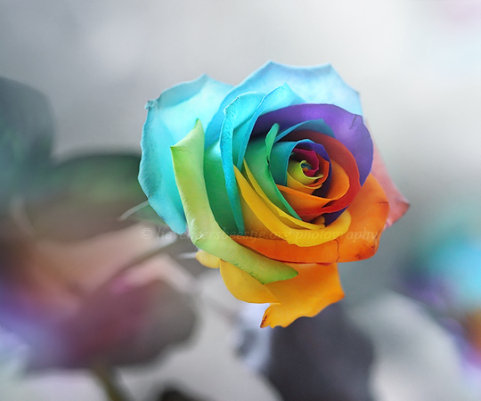
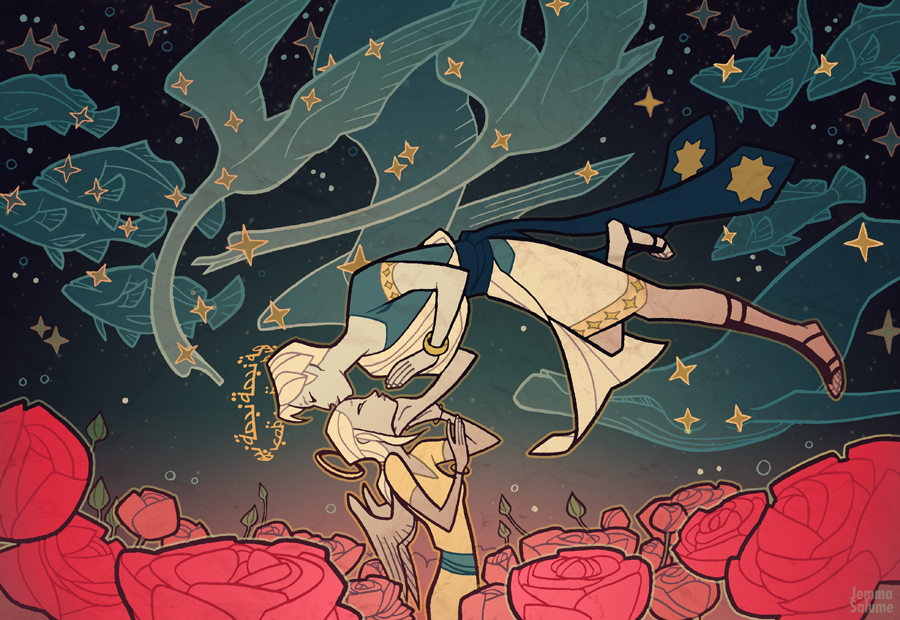
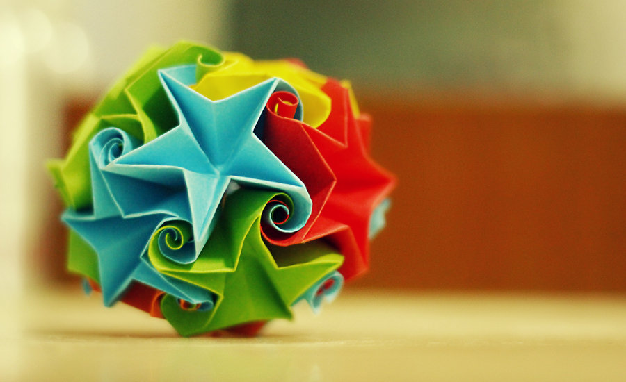
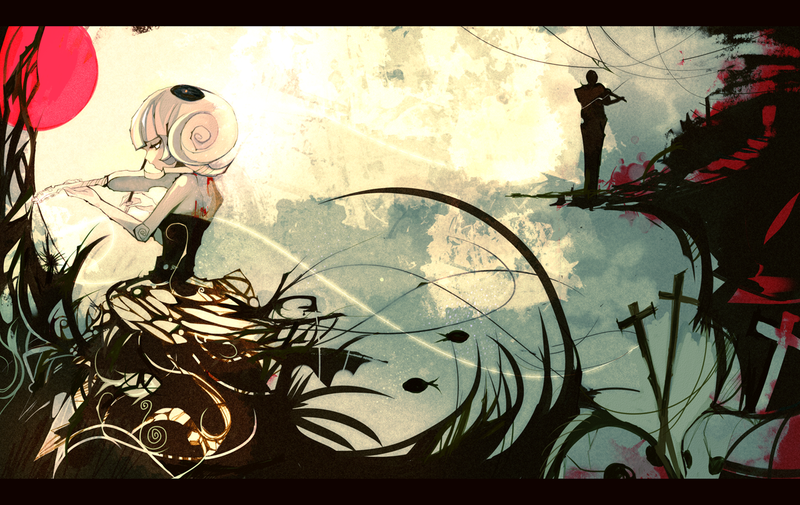
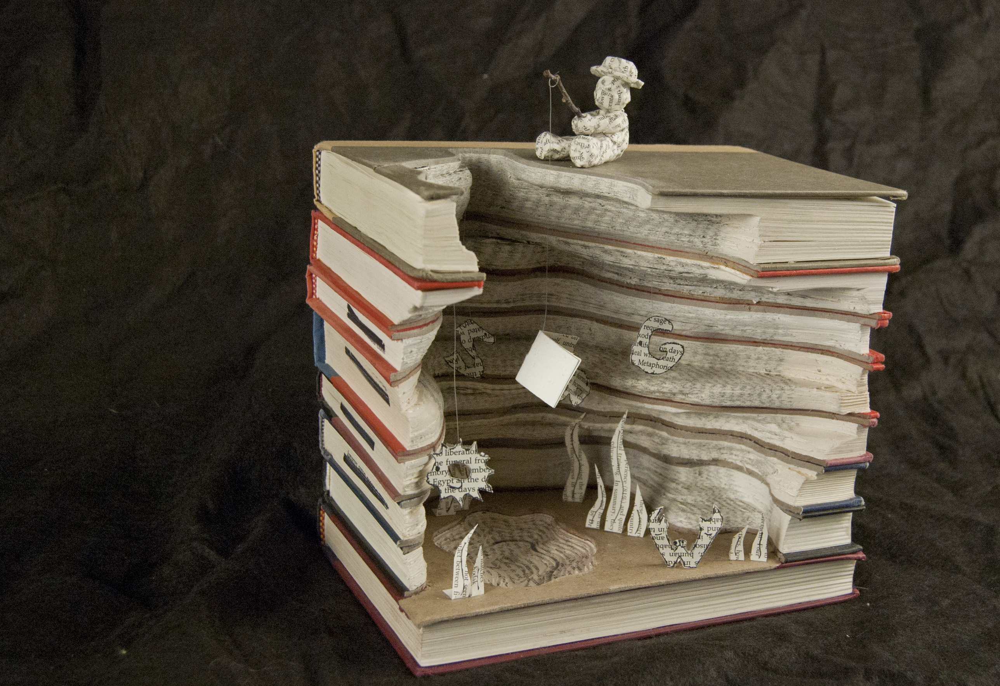
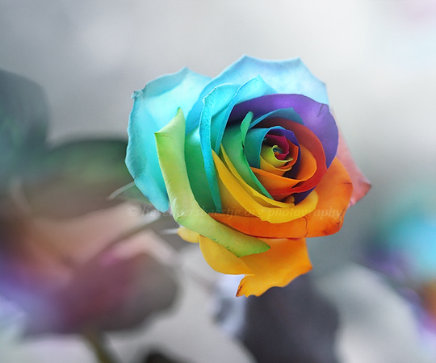